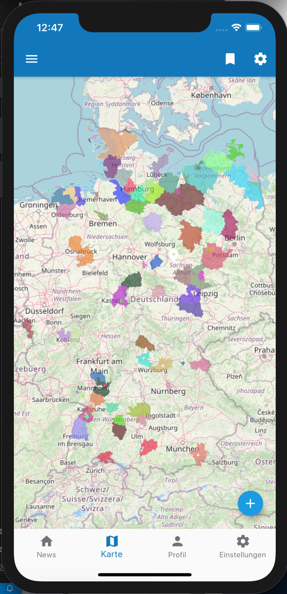

<dir-header>
    Aktuelles
</dir-header>

<dir-content>

    <news-wrapper>
        <span n-title>Entwicklung einer iOS und Android Version von "Darf ich raus"</span>
        <span n-date>12. April</span>
        <span n-body>...</span>
        
    </news-wrapper>

    <news-wrapper>
        <span n-title>Erfolgreiche Bewerbung beim Solution Enabler Programm</span>
        <span n-date>22. März 2020</span>
        <span n-body>...</span>
        
    </news-wrapper>

    <news-wrapper>
        <span n-title>Teilnahme am Wir vs. Virus Hackathon</span>
        <span n-date>07. April 2020</span>
        <span n-body>...</span>
        
    </news-wrapper>

    

</dir-content>